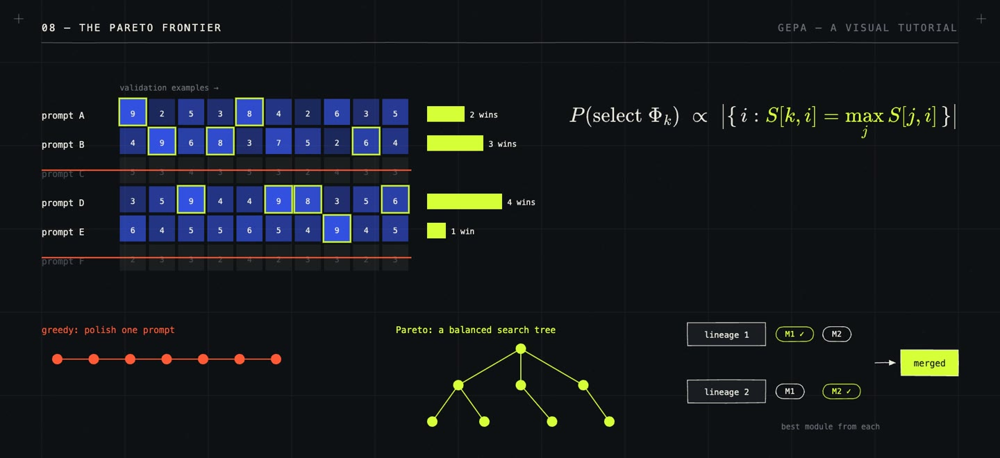

/ 8:32 VIDEO · 4 MIN READ
GEPA and prompt optimization:
learning in language, not weights.
Prompt engineering began with people rewriting instructions until a model behaved. It has become a form of learning in its own right: run the system, inspect what failed, revise its instructions, and test again. The parameters are words rather than weights, but the objective is familiar. We want experience on one set of examples to improve performance on the next.
In 2022, Automatic Prompt Engineer (APE) used a language model to propose instructions, evaluate them, and keep the best. Its prompts matched or beat human-written ones on 19 of 24 tasks. OPRO (2023) supplied past prompts and their scores; ProTeGi and TextGrad turned failures into written critiques, or textual gradients. DSPy made pipelines of model calls into programs whose prompts could be optimized. GEPA, short for Genetic-Pareto (paper, code), brings these ideas together around a particularly useful property of language: a failed run can tell us much more than its score.
What can we learn from one failed attempt?
Most systems contain several model calls, each with its own instructions. A poor final answer does not tell us which instruction to change. But the execution trace may contain a compiler error, a mistaken tool call, or an evaluator explaining which requirement was missed. A model capable of interpreting that feedback can propose a targeted change without first discovering it through thousands of small parameter updates.
With \(\Phi\) the system, \(\Pi = \langle \pi_1, \dots, \pi_k \rangle\) its prompts, and \(\mu\) a metric comparing an output with its reference \(m\), the search is
\[\Pi^* = \arg\max_\Pi\; \mathbb{E}_{(x, m) \sim D}\big[\mu(\Phi_\Pi(x), m)\big].\]
The budget is a limited number of runs. GEPA uses a reflection model to read a few full traces and the evaluator's feedback, diagnose a failure, and rewrite one module's instruction. The new prompt is an explicit hypothesis about how the system should behave differently. Validation decides whether that hypothesis survives.
Why keep more than the best prompt?
A candidate can improve the average while losing a useful ability on a particular input. If every iteration starts from the current winner, the search can discard precisely the variation it needs to escape a local optimum. GEPA instead keeps candidates with complementary strengths on a Pareto frontier. It tracks their scores on individual validation examples and removes candidates dominated by others.
The next parent is selected in proportion to the number of examples on which it achieves a best score:
\[P(\text{select } \Phi_k) \propto \big|\{\, i : S[k, i] = \max_j S[j, i] \,\}\big|,\]
where \(S[k, i]\) is candidate \(k\)'s score on example \(i\). A prompt that solves a difficult subset can remain useful even if it loses on the overall mean. Modules from different lineages can then be merged.

The paper's ablation finds this strategy stronger than always mutating the best candidate. Across six tasks, the authors report improvements over GRPO averaging 6%, reaching 20%, with up to 35× fewer rollouts. They also report gains of over 10% against MIPROv2. These are results under the paper's experimental conditions, not a general equivalence between changing prompts and training weights. Rollout counts also do not include every difference in the cost of reflection and evaluation.
The two approaches can cooperate. BetterTogether alternates prompt optimization and fine-tuning and beats either alone in its experiments. Prompts select and organize capabilities already available to the model; weight updates can change those capabilities. Treating them as competing answers to every adaptation problem misses that division of labor.
There are limits to learning in language. Instructions consume context, repeated rewrites can lose details, and much of the search budget goes into validation. ACE addresses the loss of accumulated lessons by maintaining an evolving playbook. GEPA's merging step is also sensitive to its settings. The interesting question is how much useful experience we can compress into instructions before the system needs a different kind of adaptation.